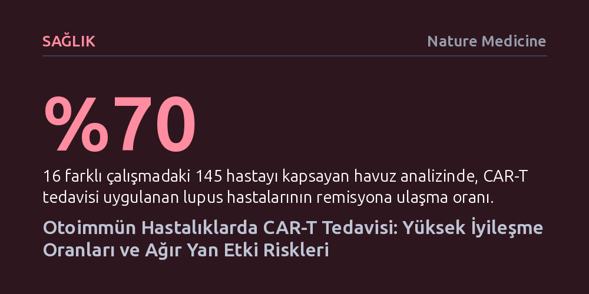

SAGLIK · Nature Medicine · 2026-10-17
Kanser tedavisinde çığır açan CAR-T hücreleri ağır otoimmün vakalarda yüksek remisyon sağlarken, son denemelerdeki ölümcül toksisiteler güvenlik tartışmasını alevlendirdi. Tedavinin ağır riskleri, mevcut ilaçlarla kontrol edilebilen kronik hastalarda kullanımını tartışmalı kılıyor.
Kanserden sonra otoimmün hastalıklar için mucizevi bir kurtarıcı gibi görülen hücresel tedavilerin, kontrol altındaki kronik hastalarda kabul edilemeyecek kadar ağır toksisite ve maliyet riskleri taşıyabileceğini gösteriyor.

Lupus ve benzeri sistemik otoimmün hastalıklar, bağışıklık sisteminin kendi sağlıklı dokularını hedef almasıyla organ yetmezliğine varan ağır tahribatlara yol açar. 2021 yılında Almanya'nın Erlangen kentinde, geleneksel tüm tedavi seçenekleri tükenen ve hayati tehlikesi bulunan genç bir lupus hastasına deneysel bir hücresel terapi uygulandı. Hastanın kendi T hücreleri laboratuvarda genetik mühendislikle yeniden programlanarak, zararlı otoantikorları üreten B hücrelerinin yüzeyindeki CD19 proteinini yok edecek biçimde geri verildi. Tek bir infüzyonun ardından hastanın kanda lupus izi dahi bulunamayacak biçimde tamamen ilaçsız remisyona girmesi tıp dünyasında büyük yankı uyandırdı.
Bu ilk çarpıcı başarının ardından araştırmacılar kapsamı genişletti. Erlangen ekibinin ağır otoimmün hastalığı olan 24 yetişkinle yürüttüğü çalışmada, hastaların 22'sinde tek doz hücre nakliyle en az 24 hafta süren ilaçsız hastalık kontrolü elde edildi. Ardından 145 hastayı kapsayan çok merkezli geniş analizler, lupus hastalarının yüzde 70'inin bu yöntemle tam iyileşme tablosuna ulaştığını ortaya koydu. Tedavinin miyastenia gravis ve sert kişi sendromu gibi diğer otoimmün ve nörolojik tablolarda da işe yaradığının görülmesi, alandaki klinik heyecanı hızla tırmandırdı.
Elde edilen ilk olumlu bulgular, biyoteknoloji şirketlerinin ve akademik merkezlerin katıldığı küresel bir araştırma dalgası başlattı. Dünya genelinde 100'den fazla faz 1 ve faz 2 klinik deneme devreye girdi; hatta bazı firmalar nadir nörolojik bozukluklar için düzenleyici kurumlardan öncelikli onay alma sürecine hazırlandıklarını duyurdu. Kanser alanında CAR-T terapisinin öncülerinden olan immünologlar bile, hücresel tedavilerin otoimmün sahada bu denli hızlı karşılık bulmasını ve hızla kliniğe taşınmasını beklemediklerini ifade ediyor.
Üstelik umut verici sonuçlar yalnızca yetişkin hastalarla da sınırlı kalmadı. Çocukluk çağında başlayan ve hızla organ hasarı tehdidi oluşturan sistemik lupus vakalarında yapılan erken denemeler, doku kaybı geri döndürülemez hale gelmeden önce hastalığı durdurmanın mümkün olduğunu gösterdi. Sekiz genç hastanın izlendiği bir çalışmada, infüzyon sonrası ortalama 16 ayı aşkın süre boyunca belirgin klinik düzelme yaşandı ve ciddi bir yan etki bildirilmedi. Bu tablo, ağır vakalarda organ hasarının birikmesini beklemeden erken müdahale fikrini güçlendirdi.
Ancak tedavinin rutin sağlık sistemine girmesi hedeflenirken alana çok sert bir gerçeklik kontrolü geldi. Novartis ve Bristol Myers Squibb gibi büyük ilaç şirketleri, otoimmün hastalıklara yönelik CAR-T klinik denemelerini güvenlik gerekçesiyle durdurmak veya askıya almak zorunda kaldı. Kararın arkasında, bağışıklık sisteminin kontrolsüz aktivasyonu sonucu gelişen hemofagositik sendroma bağlı hasta ölümleri ve bazı faz 2 çalışmalarında ciddi nörotoksisite oranlarının beklenenden yüksek çıkması yatıyordu.
Ölümcül lösemi veya lenfoma vakalarında CAR-T hücreleri kullanılırken sitokin fırtınası ya da nörolojik hasar gibi ölümcül riskler belirli ölçüde mazur görülebiliyor, çünkü aksi takdirde hastanın yaşam beklentisi bulunmuyor. Ancak lupus gibi otoimmün hastalıklarda tablo çok farklı. Hastaların önemli bir kısmı mevcut bağışıklık baskılayıcı ilaçlarla semptomları kontrol altında tutularak uzun yıllar kaliteli bir hayat sürebiliyor. Böyle bir hasta grubunda hücre tedavisinin doğrudan ölüme veya ölümcül enfeksiyonlara yol açması, kabul edilebilir risk sınırlarını kökten tartışmalı hale getiriyor.
CAR-T hücre tedavisinin tek engeli potansiyel ölümcül toksisiteler değil; yöntemin getirdiği ağır tıbbi ve lojistik yükler de cabası. Bu tedavi için hastanın bağışıklık hücrelerinin toplanması, laboratuvarda haftalar süren kişiye özel üretim süreci ve nakil öncesinde vücudun hazırlanması için ağır bir kemoterapi protokolü gerekiyor. Dahası, nakledilen hücrelerin vücuttaki uzun vadeli akıbeti ve ikincil kanser olasılıkları nedeniyle hastaların 15 yıl boyunca çok sıkı bir izlem altında tutulması zorunlu tutuluyor.
Romatoloji uzmanları, klinik araştırmalara katılan ideal hasta profili ile günlük poliklinik şartlarındaki karmaşık hastaların aynı olmadığını hatırlatıyor. Mevcut ilaç seçenekleriyle aylar hatta yıllar süren remisyonlar yakalamak mümkünken, hastaları deneysel bir hücresel sürecin belirsizliklerine itmenin her vaka için doğru olmadığı savunuluyor. CAR-T hücreleri, eldeki tüm imkanların tükendiği ve hayatı tehdit altındaki dirençli vakalar için dönüştürücü bir umut olmaya devam etse de, hastalığı güvenli tedavilerle kontrol edilebilen geniş kitleler için henüz erken bir aşamada bulunuyor.